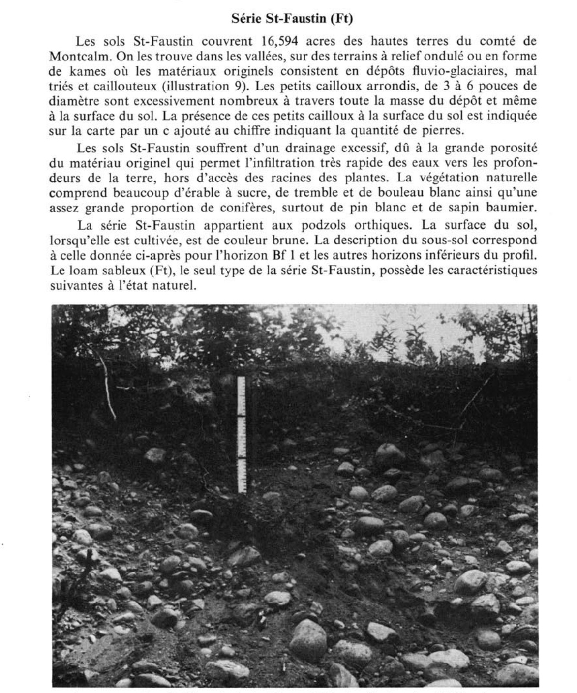

Identification & Caractéristiques Générales
Le matériau parental de la série Saint-Faustin est constitué de dépôts fluvio-glaciaires profonds, variant généralement de 10 à plus de 30 pieds d'épaisseur, formés de graviers mal assortis, de cailloux et de blocs d'origine précambrienne (granit, gneiss, quartzite et anorthosite). Ces dépôts occupent des secteurs de vallées et de hautes terres à des altitudes s'échelonnant de 600 à 1 600 pieds. La géomorphologie régionale se caractérise par des terrains au relief ondulé à légèrement vallonné, incluant des kames, des terrasses de kames, des replats ainsi que des versants dont les pentes peuvent atteindre 30 %.
Morphologiquement, le profil pédologique se développe sous une texture dominante de sable loameux à loam sableux plus ou moins fin, présentant une forte charge en fragments grossiers (graviers, cailloux, pierres et blocs) tant en surface que dans la masse du solum. Ce sol se caractérise par un drainage naturel rapide à excessif et une perméabilité très élevée due à la grande porosité du matériau originel, entraînant une infiltration rapide des eaux en profondeur et une faible capacité de rétention hydrique. Chimiquement, le solum montre une réaction fortement acide, avec un pH généralement inférieur à 5,0, et une faible fertilité naturelle intrinsèque.
Sur le plan agronomique, les aptitudes de la série Saint-Faustin sont très limitées, en raison combinée de la pierrosité excessive, de la forte acidité, de la pauvreté chimique et du déficit hydrique estival causé par le drainage excessif. L'utilisation agricole est restreinte et se compose principalement de pâturages de faible productivité ou de cultures fourragères extensives, bien que certains secteurs topographiquement plus unis et loameux puissent être mis en valeur. La régie de ces sols exige des apports fréquents de amendements calciques pour corriger l'acidité, une fertilisation minérale et organique fractionnée pour limiter le lixiviation des éléments nutritifs dans les eaux de drainage, ainsi qu'un ensemencement hâtif au printemps pour pallier la sécheresse. En raison des contraintes topographiques prononcées, des risques d'érosion et de la difficulté d'y maintenir l'humidité, le reboisement demeure l'option d'aménagement la plus indiquée pour les secteurs en forte pente.
Classification Taxonomique & Environnement Pédologique
| Ordre Pédologique | Podzolique |
|---|---|
| Grand Groupe (SCSS) | Podzol humo-ferrique |
| Sous-Groupe Taxonomique | Podzol humo-ferrique orthique |
| Famille Pédologique | Squelettique-sableuse, mixte sableux, acide |
| Mode de Dépôt Parental | Fluvio-glaciaire |
| Classe de Drainage Naturel | Très rapidement drainé |
| Régime Thermique & Humidité | Frais / Subaride |
Description Morphologique du Profil Type
Séquences génétiques des horizons pédologiques caractérisant le profil type représentatif de la série Saint-Faustin :
Profil naturel (vierge) — Comté de Argenteuil
✓ Source : Comté de Argenteuil — Page 93Couleur Munsell : Non précisée
Structure & Consistance : Polyédrique à granulaire
Description morphologique : Humus brut brun foncé; racines; pH 4.5-5.0.
Couleur Munsell : Non précisée
Structure & Consistance : Polyédrique à granulaire
Description morphologique : Terre franche sableuse fine délavée, gris clair.
Couleur Munsell : Non précisée
Structure & Consistance : Monogranulaire à faiblement granulaire
Description morphologique : Terre franche sableuse fine, brun moyen à brun foncé; contenant quelques fines particules de gravier; certaines plages de couleur foncé; structure monogranulaire à faiblement granulaire; contenant des cailloux et des pierres arrondies; presque meuble; pH 5.0-5.4.
Couleur Munsell : Non précisée
Structure & Consistance : Monogranulaire
Description morphologique : Terre franche sableuse à terre franche sablo-graveleuse ou gravier limoneux brun jaunâtre; structure monogranulaire; pH 5.2-5.4.
Couleur Munsell : Non précisée
Structure & Consistance : Polyédrique à granulaire
Description morphologique : Gravier brun jaunâtre clair en poches avec du sable gris fin; pH 5.3-5.6.
Couleur Munsell : Non précisée
Structure & Consistance : Polyédrique à granulaire
Description morphologique : Gravier ou terre franche sablo-graveleuse gris brunâtre clair; contenant des cailloux et des pierres arrondies; de composition et d'assortiment très variable; pH 5.6-6.0.
Profil naturel (vierge) — Comté de Gatineau
✓ Source : Comté de Gatineau — Page 36Couleur Munsell : Non précisée
Structure & Consistance : Polyédrique à granulaire
Description morphologique : Humus brut brun foncé et racines; pH 4.5 à 5.0.
Couleur Munsell : Non précisée
Structure & Consistance : Polyédrique à granulaire
Description morphologique : Loam sableux éluvié gris pâle.
Couleur Munsell : Non précisée
Structure & Consistance : Monogranulaire
Description morphologique : Loam sableux brun foncé à brun, contenant un peu de gravier; structure monogranulaire; quelques pierres ou cailloux arrondis; lâche et très perméable; pH 5.2 à 5.4.
Profil forestier (sous boisé) — Comté de Hull
✓ Source : Comté de Hull — Page 42Couleur Munsell : Non précisée
Structure & Consistance : Polyédrique à granulaire
Description morphologique : Humus brut brun foncé et racines; pH 4.5 à 5.0.
Couleur Munsell : Non précisée
Structure & Consistance : Polyédrique à granulaire
Description morphologique : Loam sableux, éluivé, gris pâle.
Couleur Munsell : Non précisée
Structure & Consistance : Monogranulaire
Description morphologique : Loam sableux brun foncé à brun, contenant un peu de gravier; structure monogranulaire; quelques pierres ou cailloux arrondis; lâche et très perméable; pH 5.2 à 5.4.
Couleur Munsell : Non précisée
Structure & Consistance : Monogranulaire
Description morphologique : Loam sableux à loam sablo-graveleux ou à gravier loameux, brun jaunâtre; structure monogranulaire; pH 5.2 à 5.4.
Couleur Munsell : Non précisée
Structure & Consistance : Polyédrique à granulaire
Description morphologique : Gravier et sable brun jaunâtre pâle; pH 5.4 à 5.6.
Couleur Munsell : Non précisée
Structure & Consistance : Polyédrique à granulaire
Description morphologique : Gravier, cailloux arrondis et pierres gris brunâtre pâle; pH 5.6 à 6.0.
Profil cultivé (agricole) — Comté de Portneuf
✓ Source : Comté de Portneuf — Page 93Couleur Munsell : 7.5YR 3/2, 7.5YR 2/2
Structure & Consistance : Polyédrique à granulaire
Description morphologique : Loam sableux fin très graveleux et caillouteux brun foncé (7.5YR 3/2 h), brun très foncé (7.5YR 2/2 s); particulaire; très friable; racines très abondantes, fines à microscopiques, non-orientées, exo-agrégats; gravier et cailloux (50%), arrondi à sub-arrondis; limite abrupte, régulière; pH : 5.1.
Couleur Munsell : Non précisée
Structure & Consistance : Polyédrique à granulaire
Description morphologique : Loam sableux fin très graveleux et caillouteux; particulaire; très friable; gravier et cailloux (50%) arrondis à sub-arrondis; limite distincte, interrompue.
Couleur Munsell : 7.5YR 5/6, 10YR 6/8
Structure & Consistance : Polyédrique à granulaire
Description morphologique : Loam sableux très fin très graveleux et caillouteux, brun vif (7.5YR 5/6 h), jaune-brun (10YR 6/8); particulaire; très friable; racines peu abondantes, moyennes, obliques, exo-agrégats; gravier et cailloux (50%), arrondis à sub-arrondis; limite distincte, interrompue; pH : 5.6.
Couleur Munsell : 10YR 5/8, 10YR 6/8
Structure & Consistance : Polyédrique à granulaire
Description morphologique : Loam sableux très fin très graveleux et caillouteux brun-jaune (10YR 5/8 h), jaune-brun (10YR 6/8 s); particulaire; très friable; racines peu abondantes, moyennes, obliques, exo-agrégats; racines peu abondantes, très fines et microscopiques, verticales, exo-agrégats; gravier et cailloux (75%) arrondis à sub-arrondis; limite abrupte, ondulée; pH : 5.8.
Couleur Munsell : 10YR 7/4, 10YR 6/3
Structure & Consistance : Polyédrique à granulaire
Description morphologique : Sable grossier très graveleux et caillouteux brun pâle à jaune-brun (10YR 6/3 à 6/6 h), brun très pâle (10YR 7/4 s); particulaire; meuble; racines très peu abondantes, très fines et microscopiques; verticales; exo-agrégats; gravier et cailloux (75%), arrondis à sub-arrondis; pH : 5.7.
Profil cultivé (agricole) — Comté de Québec
✓ Source : Comté de Québec — Page 46Couleur Munsell : 7.5YR 3/2, 7.5YR 2/2
Structure & Consistance : Polyédrique à granulaire
Description morphologique : Loam sableux fin très graveleux et caillouteux brun foncé (7.5YR 3/2 h), brun très foncé (7.5YR 2/2 s); particulaire; très friable; racines très abondantes, fines à microscopiques, non orientées, exo-agrégats; gravier et cailloux (50%), arrondis à subarrondis; limite abrupte, régulière; épaisseur de 12 à 20 cm; pH: 5.1.
Couleur Munsell : Non précisée
Structure & Consistance : Polyédrique à granulaire
Description morphologique : Loam sableux fin très graveleux et caillouteux; particulaire; très friable; gravier et cailloux (50%) arrondis à subarrondis; limite distincte, interrompue; épaisseur de 0 à 3 cm.
Couleur Munsell : 7.5YR 5/6, 10YR 6/8
Structure & Consistance : Polyédrique à granulaire
Description morphologique : Loam sableux fin très graveleux et caillouteux, brun vif (7.5YR 5/6 h), jaune-brun (10YR 6/8 s); particulaire; très friable; racines peu abondantes, moyennes, obliques, exo-agrégats; gravier et cailloux (50%), arrondis à subarrondis, limite distincte, interrompue; épaisseur de 0 à 10 cm; pH: 5.6.
Couleur Munsell : 10YR 5/8, 10YR 6/8
Structure & Consistance : Polyédrique à granulaire
Description morphologique : Loam sableux fin très graveleux et caillouteux brun-jaune (10YR 5/8 h), jaune-brun (10YR 6/8 s); particulaire; très friable; racines peu abondantes, moyennes, obliques, exo-agrégats; racines peu abondantes, très fines et microscopiques, verticales, exo-agrégats; gravier et cailloux (75%) arrondis à subarrondis; limite abrupte, ondulée; épaisseur de 20 à 30 cm; pH: 5.8.
Couleur Munsell : 10YR 7/4, 10YR 6/3
Structure & Consistance : Polyédrique à granulaire
Description morphologique : Sable grossier très graveleux et caillouteux brun pâle à jaune brun (10YR 6/3 à 6/6 h), brun très pâle(10YR 7/4 s); particulaire; meuble; racines très peu abondantes, très fines et microscopiques, verticales, exo-agrégats; gravier et cailloux (75%), arrondis à subarrondis; pH: 5.7.
Profils Photographiques & Planches de Terrain
Documents iconographiques, figures pédologiques et coupes de terrain documentées dans les mémoires d'inventaire pour de la série Saint-Faustin :



Propriétés Physico-Chimiques & Analyses de Laboratoire
| Horizon | Prof. (pces/cm) | Sable % | Limon % | Argile % | pH | C % | N % | Ca éch. | Mg éch. | K éch. | H+ éch. | Bases tot. | C.E.C. (meq/100g) | Saturation % | ||||||||||||
|---|---|---|---|---|---|---|---|---|---|---|---|---|---|---|---|---|---|---|---|---|---|---|---|---|---|---|
| Ap | 0-15 | 6.0 | 13.0 | 17.0 | 18.0 | 54.0 | 43.0 | 3.0 | 5.1 | 4.4 | 7.51 | 0.39 | 1.39 | 0.80 | 1.31 | 1.80 | 0.78 | 1.19 | 2.70 | 0.26 | 0.12 | 0.07 | 12.0 | 15.15 | 21 | 72 |
| Bfh | 15-23 | 3.0 | 11.0 | 19.0 | 19.0 | 52.0 | 45.0 | 3.0 | 5.6 | 4.9 | 3.21 | 0.15 | 1.99 | 1.58 | 2.03 | 2.55 | 0.45 | 0.99 | 0.25 | 0.07 | 0.02 | 0.05 | 3.5 | 3.89 | 10 | 60 |
| Bf | 23-43 | 2.5 | 9.0 | 20.5 | 27.0 | 59.0 | 40.0 | 1.0 | 5.9 | 5.2 | 1.70 | 0.08 | 1.45 | 0.96 | 1.32 | 1.60 | 0.18 | 0.53 | 0.55 | 0.09 | 0.01 | 0.04 | 3.0 | 3.69 | 18 | 220 |
| C | à 43 cm | 64.0 | 18.0 | 9.0 | 6.0 | 97.0 | 1.0 | 2.0 | 5.7 | 4.9 | 0.64 | 0.04 | 0.39 | 0.31 | 0.43 | 0.55 | 0.06 | 0.26 | 0.25 | 0.04 | 0.03 | 0.03 | 0.5 | 0.85 | 41 | 372 |
Particularités Régionales, Phases & Variantes Pédologiques
Déclinaisons régionales, faciès texturaux, phases d'érosion ou de pierrosité et variantes cartographiées par étude pour de la série Saint-Faustin :
| Étude Régionale | Symbole | Appellation / Phase / Variante | Différenciation avec la série type (Analyse pédologique) |
|---|---|---|---|
| Comté de Argenteuil | Ft |
Saint-Faustin loam sableux | Modalité modale de référence (type de base de la série). |
| Comté de Champlain | Ft |
Saint-Faustin loam sableux caillouteux | Conforme à la série type de référence (caractéristiques texturales et drainage identiques). |
| Comté de Gatineau | Ft |
Saint-Faustin loam sableux | Conforme à la série type de référence (caractéristiques texturales et drainage identiques). |
| Comté de Hull | Ft |
Saint-Faustin loam sableux | Conforme à la série type de référence (caractéristiques texturales et drainage identiques). |
| Comté de L'assomption | Ft |
Saint-Faustin loam sableux | Conforme à la série type de référence (caractéristiques texturales et drainage identiques). |
| Comté de Portneuf | Ft |
Saint-Faustin loam sableux fin très graveleux et caillouteux | Phase graveleuse à perméabilité accrue et réserve utile diminuée. |
| Comté de Québec | Ft |
Saint-Faustin loam sableux fin graveleux et caillouteux | Phase graveleuse à perméabilité accrue et réserve utile diminuée. |
Distribution Pédo-Paysagère & Représentativité Cartographique (Couverture PPS 2026)
- Sainte-Agathe loam sableux fin (SNG) — co-occurrente dans 132 polygone(s)
- Saint-Gabriel loam sableux (SGB) — co-occurrente dans 126 polygone(s)
- Ivry sable fin à loam sableux (IVR) — co-occurrente dans 106 polygone(s)
Aptitudes Agronomiques, Hydropédologie & Conservation des Sols
Indicateurs Hydropédologiques & Vulnérabilité à l'Érosion (BDHP 2026)
Interprétation BDHP : Potentiel de ruissellement faible. Sols à infiltration rapide (sables profonds, graviers bien drainés).
Classement selon l'Inventaire des Terres du Canada (ITC / CLI) : Classe 3w.
- Potentiel agricole : Terroir adapté aux cultures régionales selon la texture dominante et la régie de drainage.
- Contraintes majeures : Très rapidement drainé. Risque d'engorgement temporaire ou d'excès d'eau printanier.
- Gestion & Aménagement : Drainage souterrain ou superficiel préconisé sur les terres planes. Chaulage et apport organique régulier selon les bilans agronomiques.
- Cultures adaptées : Grandes cultures (maïs, soya, céréales), prairies fourragères et cultures maraîchères selon le contexte géomorphologique.